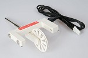

CMA0662i© 2018, ProtoIt Platform: INFENTO |  |
Beschrijving:
Deze lichtsluis kan op verschillende manieren worden gebruikt.
Tussen de armen gaat een infrarode lichtstraal, die op een lichtsensor valt.
Aan de buitenkant zit een tweede lichtsensor, die het licht van een hulplamp kan opvangen.
Wanneer er geen licht wordt ontvangen is de lichtsluis onderbroken.
Eventueel kan met een gatenwiel een aantal omwentelingen worden geteld.
Onderdelen:
CMA Lichtsluis
Op de programmategel:
| Reset als | De Teller wordt weer op nul gezet als er een actief signaal wordt ontvangen. |
| Teller | Telt het aantal keer dat de lichtsluis werd onderbroken. |
| Onderbroken | Dit signaal zendt uit wanneer de lichtstraal is onderbroken. |
| Vrije doorgang | Dit signaal zendt uit wanneer niets de lichtstraal onderbreekt. |